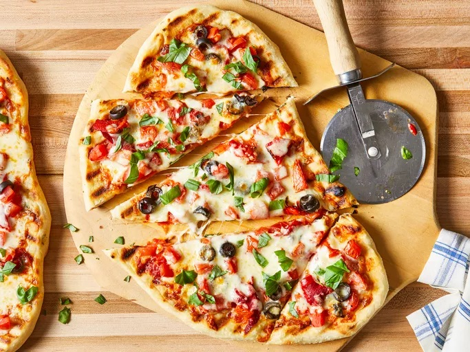

Home
Pizza on the Grill

Description
Pizza on the grill is a fantastic way to make pizza at home. The heat of a hot grill is a perfect match for a professional pizza oven. Learn the tricks for making and grilling pizza from scratch with this recipe.
Feel free to use your favorite toppings, but keep in mind not to overload the pizza.
Ingredients
-
Pizza dough
-
Garlic oil
-
Tomato sauce
-
Tomatoes
-
Black olives
-
Roasted red peppers
-
Mozzarella cheese
-
Fresh basil
Steps
-
Make the dough
-
Make the garlic oil, then brush it onto the grill grates
-
Shape the dough and place it on the hot grill.
-
Flip the crust and brush with oil.
-
Top the pizza however you like, close the lid, and cook until the cheese melts.